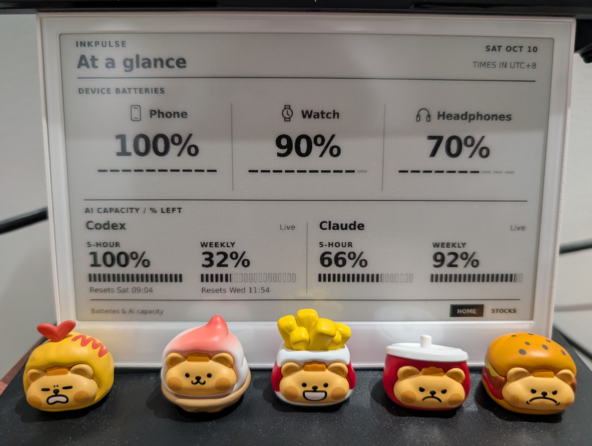

InkPulse: A Personal Tracker on an E-Ink Screen

Motivation
The story starts one day when I was scrolling through my messages and saw evi0s share his e-ink screen for AI usage tracking. That hit close to home: I was always playing with agents and suddenly getting notified that I'd hit the limit. That is frustrating without any mental preparation. Immediately I realized I could buy an e-ink screen and write some code to do something similar, which should be super fast with help from agents. Let us do it.
Implementation
I picked a reTerminal E1001, which already has an ESP32-S3, an 800 × 480 e-ink screen, and physical buttons. Enough hardware for this project, without giving myself a soldering project as well.
Let the screen do less
The system has three parts: a collector on my PC, a small service on a VPS, and the display. The PC collects AI usage and Bluetooth battery levels. The VPS fetches stock quotes and renders everything into grayscale PNGs. The E1001 downloads the images and switches between them with its buttons.
Rendering on the server turned out to be convenient: changing the layout doesn't require flashing the device again. Stock updates also keep working when my PC is off. Everything works well.
The interesting part is not refreshing
Initially I made everything refresh at a fixed interval: once a minute. But after the system ran for several hours, my instinct raised a red flag. I'd always thought e-ink screens were better suited to static content than frequent refreshes. I did some investigation with an agent, and the TL;DR was that unnecessary redraws were worth avoiding. So I added some optimizations:
Checking for updates every minute doesn't mean refreshing the panel every minute. Each image has a hash; unchanged images are left alone. While I'm AFK, the display normally holds changes and allows an update once an hour. AI capacity changes can briefly release that hold, and pressing a button overrides it.
Even the labels needed some restraint. A clock or "updated 3 minutes ago" would change the image without telling me anything useful. Fixed timestamps work better here. The firmware still stays awake, though, so this saves redraws rather than magically giving it months of battery life.
A small Bluetooth detour
Battery collection sounded like the easy part: Windows already shows the numbers, just read them. Then connecting the watch interfered with selecting my headphones' microphone. A driver update and some reconnecting later, I was debugging robotic audio instead of an e-ink screen. Restarting Bluetooth eventually cleared that audio problem. Of course.
The data has limits too. Claude Desktop's local usage cache updates more slowly than my collector, and Bluetooth battery values may be rounded or stale. I kept the last reading and its timestamp instead of pretending that polling faster makes it fresher. Fortunately these are not critical issues, and I'm totally okay living with them. If I find a solution someday, I'll come back and update this post.
Epilogue
The code and setup details are on GitHub. For now, it does what I wanted: a few useful numbers on my desk, without opening another window. Life gets better :)